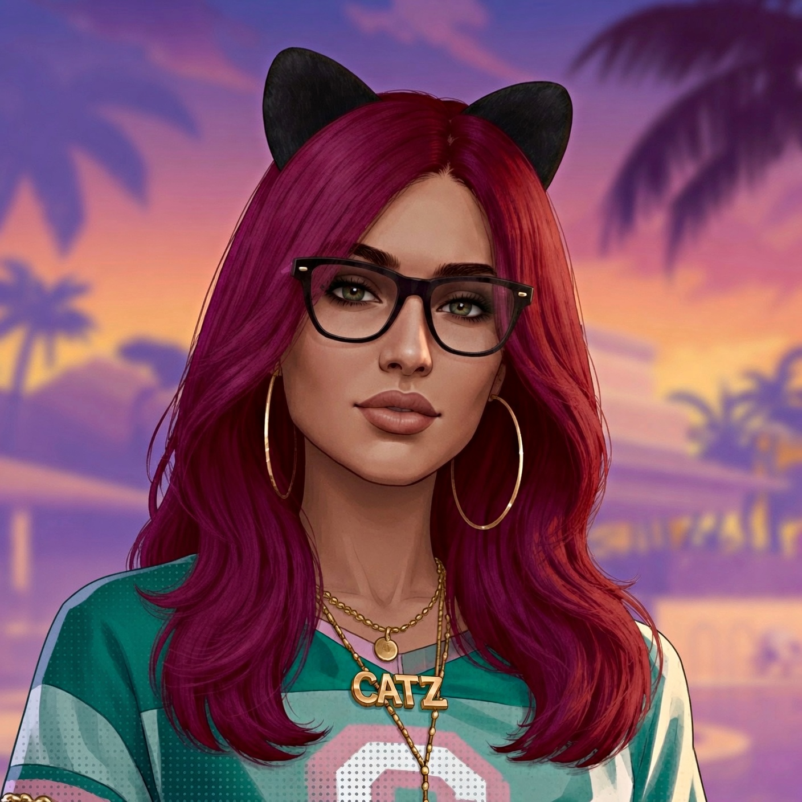

Nman.Catz
GTA V Virtual Photographer, PC Gamer, Crew Founder and Certified Cat Lover!
About Me
I am a PC Gamer and a longtime fan of GTA V. I've been making virtual Photography in Los Santos since 2019 and still having fun exploring new ideas and improving my style.
I love to mix my real life love of cats into my photos for a unique aesthetic. I mainly create photos of my avatar, but also have started to create reels that I hope capture some emotions, nostalgia and atmosphere. I am always down to collaborate with fellow creators!
I always try to treat people with the most amount of respect and kindness possible. I am currently taking Visual Communications at a college called, NAIT. I want to become a Graphic Designer in the future!
Follow on InstagramThe Catz Community
Do you like GTA crews that value friendships, loyalty, good times, and cats? Then the Catz community might be the purrfect fit for you!
Through our Discord server, you can either join our Console division or our PC division. Led by two separate and amazing Leaders, we are two crews, but 1 gamer family!
Fellow PC Player?
Feel free to add me on Steam! I mainly play GTA V Enhanced but I'm always down to connect, team up, and explore new games with you all!
Add me on Steam